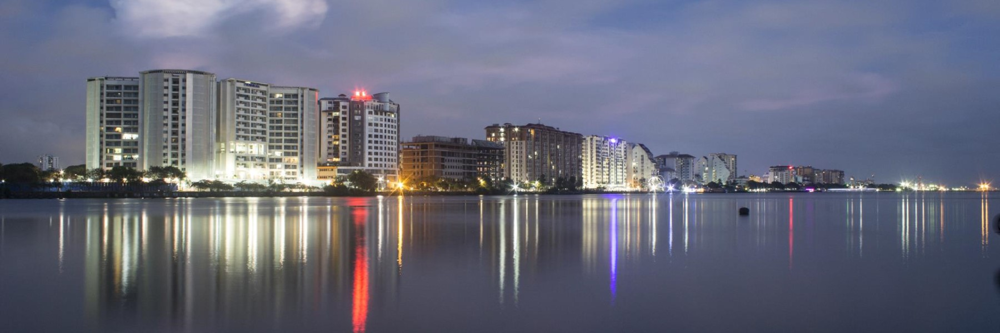

Ernakulam
Ernakulam, is a portion of the city of Kochi in central Kerala, India and has lent its name to the Ernakulam district. The Kerala High Court, the office of the Kochi Municipal Corporation and the Cochin Stock Exchange are situated here. Ernakulam is known as the commercial capital of Kerala. The Ernakulam Junction is a major railway station of the Indian Railways. Initially, Ernakulam was the headquarters of the Ernakulam District but was later shifted to Kakkanad. Ernakulam was once the capital of the Kingdom of Cochin. It is located 220 kilometres (137 mi) north - west of the state capital Thiruvananthapuram. The city has served as an incubator for many Malayali entrepreneurs and is a major financial and commercial hub of Kerala.
Marine Drive
Marine Drive is a buzzing waterfront district known for the Marine Walkway, popular for evening strolls, and leafy Subhash Bose Park. The modern Rainbow and Kettuvallam bridges offer backwater views, and cruises leave from jetties by the water. Affluent homes and offices fill the area, and shops along Broadway sell jewelry, spices, and local fabrics. Dining ranges from upscale hotel restaurants to no-frills cafes. It is built facing the backwaters, and is a popular hangout for the local populace. Ironic to its name, no vehicles are allowed on the walkway. Marine Drive is also an economically thriving part of the city of Kochi. With several shopping malls it is as an important centre of shopping activity in Kochi. Major fast food joints, including Marrybrown, DiMark, Coffee Bar are present along the walkway. The view of the setting and rising sun over the sea mouth, and the gentle breeze from the Vembanad Lake has made Marine Drive an important tourist destination in Kochi. Hundreds of people (both natives, and tourists) throng the walkway during the evenings.
Cherai beach

Cherai Beach is a beach located in Cherai in the northern side of Vypin Island, a suburb of the city Kochi in the state of Kerala, India. One of the most visited beaches in the state, it is situated at around 25 km (15 mi) from downtown Kochi and 20 km (12 mi) from Cochin International Airport. The beach is around 10 km long and is ideal for swimming as the tide is mostly low and the waves are gentle. It is known for frequent dolphin sightings. It is one of the few places where the backwaters and the sea can be seen in a single frame. Cherai Beach offers the less busier and cleaner option accessible to Kochi and always attract the tourists from around and other states as well.